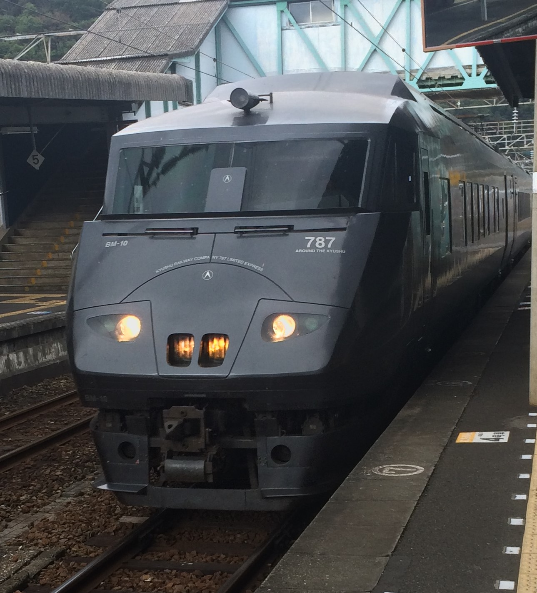

今日は大分から佐伯駅まで行き，一度特急で延岡駅に行って帰りは普通列車で帰ってくるというものです．
佐伯駅までは大分駅から大体2時間に1本の頻度でダイヤグラムが組まれています．
ここから特急「にちりん」で延岡駅に行きます．
延岡駅に着きました．外観が昔の大分駅の駅舎と酷似しています． ここから佐伯駅まで，普通列車で行きます．
ここが大分県最南端の駅の宗太郎駅です． ここに止まる列車は1日あたり上下それぞれ3本ずつしかなく，秘境駅としても有名です．
今日は宗太郎駅だけを目指していたのでこれでおしまいです． 上の画像は今回使った切符です．3日間普通列車，快速列車が乗り放題です． 自由気ままに旅行したいという方はこういう切符が楽しめると思います．
今回通った路線：日豊本線
乗った車両：時系列順に815系，787系，キハ200系
詳細が気になる方は資料一覧へ